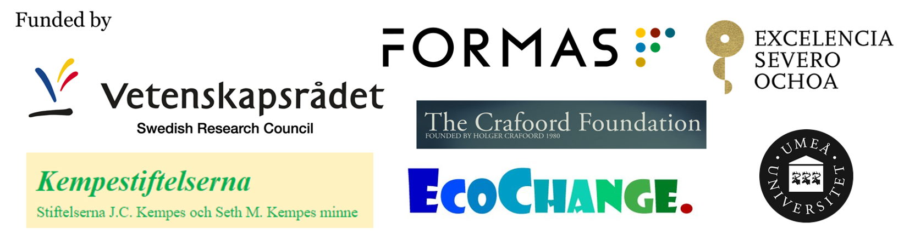

2024
Yan D, Han Y, Liu J, Zan S, Lu Y, An Z, Capo E (2024) Metagenomic analysis of sedimentary archives reveals ‘historical’ antibiotic resistance genes diversity increased over recent decades in the environment. Environmental Research Letters doi: 10.1088/1748-9326/ad850a
Capo E*, Picard M*, Nakane K, Kuwae M, Bertilsson S, Kagami M, Liu X, Sakai Y, Tsugeki N (2024) A sedimentary DNA perspective about the influence of environmental and food web changes on the microbial eukaryotic community of Lake Biwa. Freshwater Biology doi: 10.1111/fwb.14326
Sanz-Sáez I, Bravo AG, Ferri M, Carreras J-M, Sánchez O, Sebastian M, Ruiz-González C, Capo E, Duarte CM, Gasol JM, Sánchez P, Acinas SG (2024) Microorganisms involved in methylmercury demethylation and mercury reduction are widely distributed and active in the bathypelagic deep ocean waters. Environmental Science & Technology doi: 10.1021/acs.est.4c00663
Yan D, Han Y, Zhong M, Wen H, An Z, Capo E (2024) Historical trajectories of antibiotics resistance genes assessed through sedimentary DNA analysis of a subtropical eutrophic lake. Environmental International doi: 10.1016/j.envint.2024.108654
Lin Q, Zhang K, Giguet-Covex C, Arnaud F, McGowan S, Gielly L, Capo E, Huang S, Ficetola GF, Shen J, Dearing JA, Meadows ME (2024) Transient social-ecological dynamics reveal signals of decoupling in a highly disturbed Anthropocene landscape. Proceedings of the National Academy of Sciences doi: 10.1073/pnas.2321303121
Yan D, Picard M, Han Y, An Z, Lei D, Zhao X, Zhang L, Capo E (2024) Sedimentary DNA reveals phytoplankton diversity loss in a deep maar lake during the Anthropocene. Limnology & Oceanography doi: 10.1002/lno.12562
Von Eggers J, Wisnoki NI, Calder JW, Capo E, Groff DV, Krist A, Shuman B (2024) Environmental filtering governs consistent vertical zonation in sedimentary microbial communities across disconnected mountain lakes. Environmental Microbiology. doi: 10.1111/1462-2920.16607
Yan D, Han Y, An Z, Lei D, Zhao X, Zhao H, Liu J, Capo E (2024) Anthropogenic drivers accelerate the changes of lake microbial eukaryotic communities over the past 160 years. Quaternary Science Reviews. doi: 10.1016/j.quascirev.2024.108535
Picard M, Von Eggers J, Brasell KA, Yan D, Klaminder J, Alsos IG, Barouillet C, Cheng Y, Dommain R, Dulias K, Duxbury L, Edwards ME, Garcés Pastor S, Harning D, Hudson SM, Hutson G, Kaynar S, Kurte L, Leunda M, Lopez MLD, Moguel B, Olajos F, Pérez Godoy V, Revéret A, Rijal DP, Rydberg J, Schwörer C, Stoof-Leichsenring KR, Taranu ZE, Thomson-Laing G, Thorpe A, Tiedemann R, Nogales LV, Wang Y, Wood SA, Capo E (2024) Using DNA archived in lake sediments to reconstruct past ecosystems. Chapter in the Encyclopedia of Quaternary Science, 3rd edition doi: 10.1016/B978-0-323-99931-1.00171-9
Yan D, An Z, Capo E (2024) Organic matter content and source is associated with the depth-dependent distribution of prokaryotes in lake sediments. Freshwater Biology doi: 10.1111/fwb.14223
Rincón-Tomás B, Lanzén A, Sánchez P, Estupiñán M, Sanz-Saéz I, Elisabete Bilbao M, Rojo D, Mendibil I, Pérez-Cruz C, Ferri M, Capo E, Abad-Recio IL, Amouroux D, Bertilsson S, Sánchez O, Acinas SG, Alonso-Sáez L (2024) Revisiting the mercury cycle in marine sediments: a potential multifaceted role for Desulfobacterota. Journal of Hazardous Materials doi: 10.1016/j.jhazmat.2023.133120
2023
Capo E, Barouillet C, Smol JP (2023). Tracking environmental change using lake sediments: Sedimentary DNA (Vol. 6). Springer Cham doi: 10.1007/978-3-031-43799-1
Capo E, Barouillet C, Smol JP (2023). Using lake sedimentary DNA to reconstruct biodiversity changes. Chapter in the book “Tracking Environmental change using lake sediments: Sedimentary DNA (Vol. 6). Springer Cham (eds Capo E, Barouillet C, Smol JP). doi: 10.1007/978-3-031-43799-1_1
Giguet-Covex C, Jelavić S, Foucher A, Morlock MA, Wood SA, Augustijns F, Domaizon I, Gielly L, Capo E (2023). The sources and fates of lake sedimentary DNA. Chapter in the book “Tracking Environmental change using lake sediments: Sedimentary DNA (Vol. 6). Springer Cham (eds Capo E, Barouillet C, Smol JP). doi: 10.1007/978-3-031-43799-1_2
Barouillet C, Domaizon I, Capo E (2023). Protist DNA from lake sediments. Chapter in the book “Tracking Environmental change using lake sediments: Sedimentary DNA (Vol. 6). Springer Cham (eds Capo E, Barouillet C, Smol JP). doi: 10.1007/978-3-031-43799-1_6
Huston G, Lopez MLD, Cheng Y, King L, Duxbury LC, Picard M, Thomson-Laing G, Myler E, Caren C, Helbing CC, Kinnison MT, Saros JE, Gregory-Eaves I, Monchamp M-E, Wood SA, Armbrecht L, Ficetola GF, Kurte L, Von Eggers J, Brahney J, Parent G, Sakata MK, Doi H, Capo E (2023) Detection of fish sedimentary DNA in aquatic systems: A review of methodological challenges and future opportunities. Environmental DNA doi: 10.1002/edn3.467
Cabrol L*, Capo E*, van Vliet D, von Meijenfeldt, Bertilsson S, Villanueva L, Sánchez-Andrea I, Björn E, Bravo AG, Heimbürger-Boavida L-E. Redox gradient shapes the abundance and diversity of mercury-methylating microorganisms along the water column of the Black Sea. mSystems (* joint first authors) doi: 10.1128/msystems.00537-23
Williams J, Spanbauer T, Heintzman P, Blois J, Capo E, Goring S, Monchamp M-E, Parducci L, Von Eggers J, Alsos IG, Bowler C, Coolen M, Cullen N, Crump S, Epp L, Fernandez-Guerra A, Grimm E, Herzschuh U, Mereghetti A, Meyer M, Nota K, Pedersen MW, Perez V, Shapiro B, Stoof-Leichsenring K, Wood J. (2023) Strengthening global-change science by integrating aeDNA with paleoecoinformatics. Trends in Ecology & Evolution doi: 10.1016/j.tree.2023.04.016
Capo E*, Cosio C*, Gascón Díez E, Loizeau J-L, Mendes E, Adatte T, Franzenburg S, Bravo AG. (2023) Anaerobic mercury methylators inhabit sinking particles of oxic water columns. Water Research (* joint first authors) doi: 10.1016/j.watres.2022.119368
Lin Q, Zhang K, McGowan S, Huang S, Xue Q, Capo E, Zhang C, Zhao C, Shen J. (2023) Characterization of lacustrine harmful algal blooms using multiple biomarkers: Historical processes, driving synergy and ecological shifts. Water Research doi: 10.1016/j.watres.2023.119916
Capo E, Peterson BD, Kim M, Jones DS, Acinas SG, Amyot M, Bertilsson S, Björn E, Buck M, Cosio C, Elias D, Gilmour C, Goñi Urriza MS, Gu B, Lin H, Liu Y-R, McMahon K, Moreau JW, Pinhassi J, Podar M, Puente-Sánchez F, Sánchez P, Storck V, Tada Y, Vigneron A, Walsh D, Vandewalle-Capo M, Bravo AG, Gionfriddo C (2023). A consensus protocol for the recovery of mercury methylation genes from metagenomes. Molecular Ecology Resources doi: 10.1111/1755-0998.13687
Barouillet C, Monchamp M-E, Bertilsson S, Brasell K, Domaizon I, Epp LS, Ibrahim A, Mejbel H, Nwosu EC, Pearman JK, Picard M, Thomson-Laing G, Tsugeki N, Von Eggers J, Gregory-Eaves I, Pick F, Wood S, Capo E. (2023) Investigating the effects of anthropogenic stressors on lake biota using sedimentary DNA. Freshwater Biology doi: 10.1111/fwb.14027
Zhong M*, Capo E*, Zhang H, Hu H, Wang Z, Tian W, Huang T, Bertilsson S. (2023) Homogenization of water and sediment bacterial communities in a shallow lake (Lake Balihe, China). Freshwater Biology (* joint first authors) doi: 10.1111/fwb.14016
2022
Capo E*, Feng C*, Bravo AG, Bertilsson S, Soerensen A, Pinhassi J, Buck M, Karlsson C, Hawkes J, Björn E (2022) Expression levels of hgcAB genes and mercury availability jointly explain methylmercury formation in stratified brackish waters. Environmental Science & Technology (* joint first authors) doi: 10.1021/acs.est.2c03784
Capo E*, Broman E*, Bonaglia S, Bravo AG, Bertilsson S, Soerensen A, Pinhassi J, Lundin D, Buck M, Hall POJ Nascimento FJA, Björn E (2022). Oxygen-deficient water zones in the Baltic Sea promote uncharacterized Hg methylating microbial guilds in the sediment. Limnology & Oceanography (* joint first authors). doi: 10.1002/lno.11981
Capo E*, Monchamp M-E*, Coolen MJL, Domaizon I, Armbrecht L, Bertilsson S. (2022) Environmental paleomicrobiology: using DNA preserved in aquatic sediments to its full potential. Environmental Microbiology (* joint first authors) doi: 10.1111/1462-2920.15913
2021
Lin Q, Zhang K, McGowan S, Capo E, Shen J (2021) Synergistic impacts of anthropogenic nutrient and climate change on long-term water quality and ecological dynamics in contrasting shallow-lake zones. Limnology & Oceanography doi: 10.1002/lno.11878
Figueroa D*, Capo E*, Lindh MV, Rowe OF, Paczkowska J, Pinhassi J, Andersson A (2021) Terrestrial dissolved organic matter inflow drives temporal dynamics of the bacterial community of a subarctic estuary (northern Baltic Sea). Environmental Microbiology (* joint first authors) doi: 10.1111/1462-2920.15597
Mattson L, Sörenson E, Capo E, Farnelid H, Hirwa M, Lindehoff E, Olofsson M, Svensson F, Legrand C. (2021) Functional diversity facilitates stability under environmental changes in an outdoor microalgal cultivation system. Frontiers in Bioengineering and Biotechnology doi: 10.3389/fbioe.2021.651895
Capo E, Ninnes S, Domaizon I, Bertilsson S, Bigler C, Wang X-R, Bindler R, Rydberg J. (2021) Landscape setting drives the microbial eukaryotic community structure in four Swedish mountain lakes over the Holocene. Microorganisms doi: 10.3390/microorganisms9020355
Sörenson E, Capo E, Farnelid H, Lindehoff E, Legrand C. (2021) Temperature stress induces shift from co-existence to competition for organic carbon in microalgae-bacterial photobioreactor community – enabling continuous production of microalgal biomass. Frontiers in Microbiology doi: 10.3389/fmicb.2021.607601
Capo E, Giguet-Covex C, Rouillard A, Nota K, Heintzman PD, Vuillemin A, Ariztegui D, Arnaud F, Belle S, Bertilsson S, Bigler C, Bindler R, Brown AG, Clarke CL, Crump S, Debroas D, Englund G, Ficetola FG, Garner R, Gauthier J, Gregory-Eaves I, Heinecke L, Herzschuh U, Ibrahim A, Kisand V, Kjær KH, Lammers Y, Littlefair J, Messager E, Monchamp M-E, Olajos F, Orsi W, Pedersen MW, Rijal D, Rydberg J, Spanbauer T, Stoof-Leichsenring K, Taberlet P, Talas L, Thomas C, Walsh D, Wang Y, Willerslev E, Woerkom A, Zimmermann H, Coolen MJL, Epp L, Domaizon I, Alsos I, Parducci L. (2021) Lake sedimentary DNA research on past terrestrial and aquatic biodiversity: Overview and recommendations. Quaternary doi: 10.3390/quat4010006
Ibrahim A, Capo E, Wessels M, Martin I, Meyer A, Schleheck D, Epp L. (2021) Anthropogenic impact on the historical phytoplankton community of Lake Constance reconstructed by multimarker analysis of sediment‐core environmental DNA. Molecular Ecology doi: 10.1111/mec.15696
Capo E, Spong G, Koizumi S, Puts I, Olajos F, Königsson H, Karlsson J, Byström P (2021). Droplet digital PCR applied to environmental DNA, a promising method to estimate fish population abundance from humic-rich aquatic ecosystems. Environmental DNA doi: 10.1002/edn3.115
2020
Capo E, Bravo AG, Soeresen A, Bertilsson S, Pinhassi J, Feng C, Andersson AF, Buck M, Björn E (2020) Deltaproteobacteria and Spirochaetes-Like Bacteria Are Abundant Putative Mercury Methylators in Oxygen-Deficient Water and Marine Particles in the Baltic Sea. Frontiers in Microbiology doi: 10.3389/fmicb.2020.574080
Capo E, Spong G, Königsson H, Byström P. (2020) Effects of filtration methods and water volume on the quantification of brown trout (Salmo trutta) and Arctic char (Salvelinus alpinus) eDNA concentrations via droplet digital PCR. Environmental DNA doi: 10.1002/edn3.52
Vandewalle-Capo M, Capo E, Rehamnia B, Sheldrake M, Lee N (2020). The biotechnological potential of yeast from extreme habitats. Chapter in the book “Biotechnological Applications of Extremophilic Microorganisms (Life in Extreme Environments), Editor: N Lee. doi: 10.1515/9783110424331-013
2019
Capo E*, Rydberg J*, Tolu J*, Domaizon I, Debroas D, Bindler R, Bigler C (2019) How does environmental inter-annual variability shape aquatic microbial communities? A 40-year annual record of sedimentary DNA from a boreal lake (Nylandssjön, Sweden). Frontiers in Ecology and Evolution (* joint first authors) doi: 10.3389/fevo.2019.00245
Capo E, Spong G, Norman S, Königsson H, Bartels P, Byström P. (2019) Droplet digital PCR assays for the quantification of brown trout (Salmo trutta) and Arctic char (Salvelinus alpinus) from environmental DNA collected in the water of mountain lakes. PLOS ONE doi: 10.1371/journal.pone.0226638
2017
Capo E, Debroas D, Arnaud F, Perga ME, Chardon C, Domaizon I. (2017) Tracking a century of changes in microbial eukaryotic diversity in lakes driven by nutrient enrichment and climate warming. Environmental Microbiology doi: 10.1111/1462-2920.13815
Capo E*, Domaizon I*, Maier D, Debroas D, Bigler C. (2017) To what extent is the DNA of microbial eukaryotes modified during burying into lake sediments? A repeat–coring approach on annually laminated sediments. Journal of Paleolimnology (* joint first authors) doi: 10.1007/s10933-017-0005-9
Domaizon I, Winegardner A, Capo E, Gauthier J, Gregory-Eaves I. (2017) Application of DNA-based methods in paleolimnology: new opportunities for investigating long-term dynamics of lacustrine biodiversity. Journal of Paleolimnology doi: 10.1007/s10933-017-9958-y
2016
Capo E, Debroas D, Arnaud F, Guillemot T, Bichet V, Millet L, Gauthier E, Massa C, Develle A-L, Pignol C, Lejzerowicz F, Domaizon I. (2016) Long term dynamics in microbial eukaryotes communities: a paleolimnological view based on sedimentary DNA. Molecular Ecology doi: 10.1111/mec.13893
2015
Capo E, Debroas D, Arnaud F, Domaizon I. (2015). Is Planktonic diversity well recorded in sedimentary DNA? Toward the reconstruction of past protistan diversity. Microbial Ecology doi: 10.1007/s00248-015-0627-2
